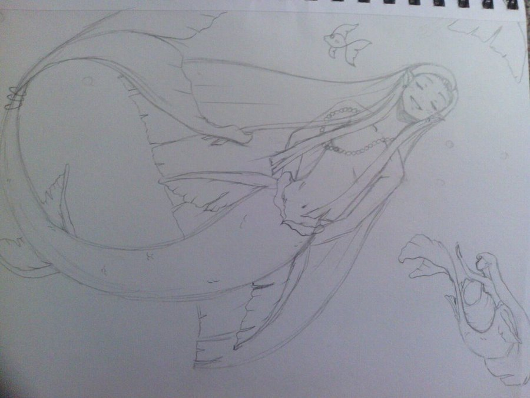
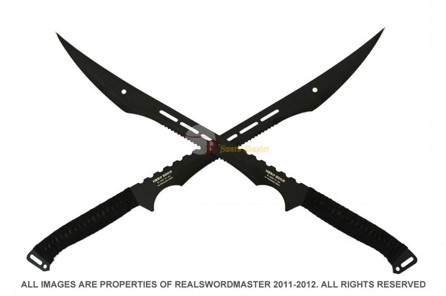

My name is Nina Simone Powlette. I play five instruments (flute, trumpet, oboe, piano and guitar), draw, sculpt, collect blades (swords (real and fantasy), axes, shurikens and throwing knives), watch anime and love rock music. I was born on April 6th of 1996 (20 yrs old) in Tampa, Florida. I lived with my mother for 18 years until I moved to New York to live with my father after my high school graduation. I've been living in New York for about ten months. I love it here.

